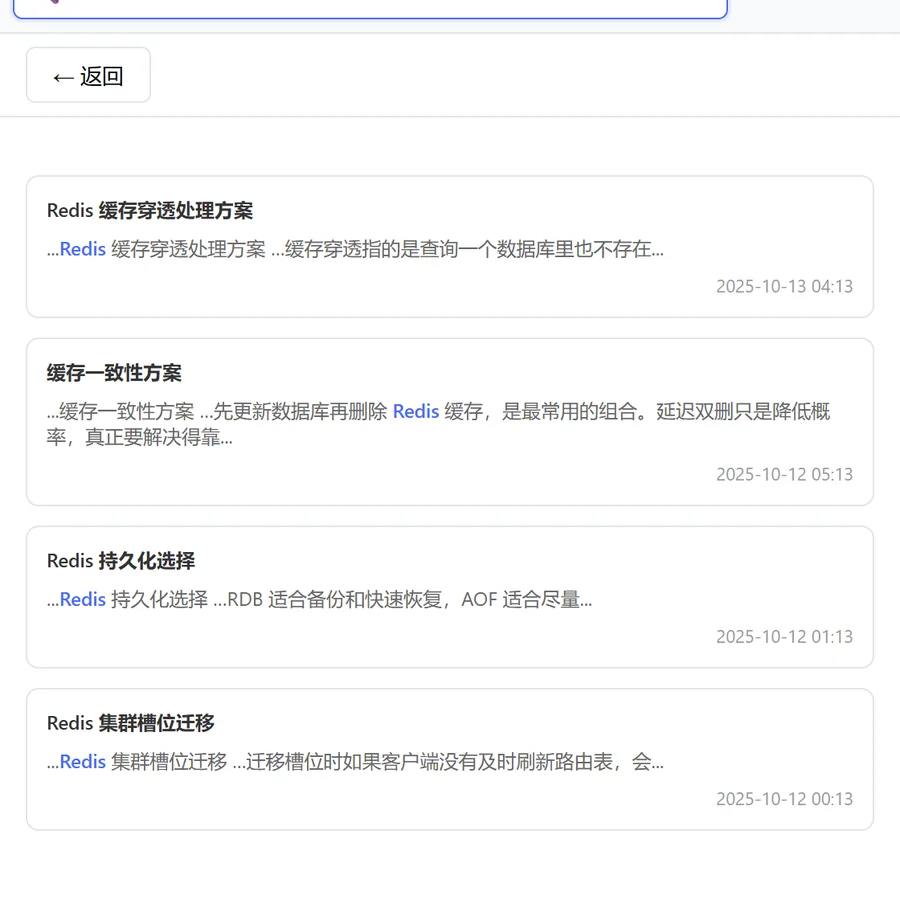
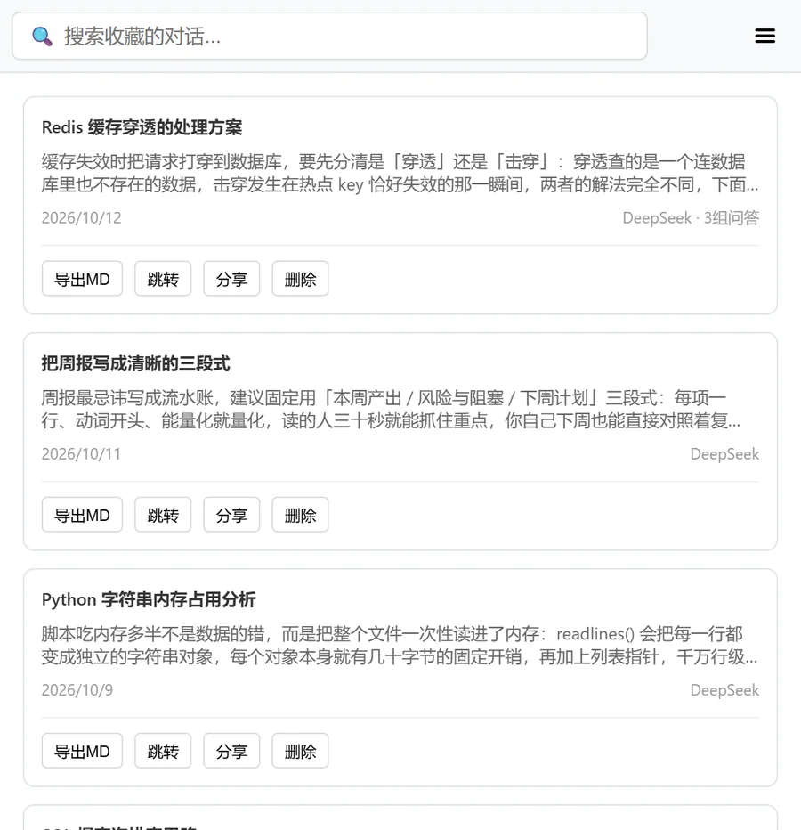
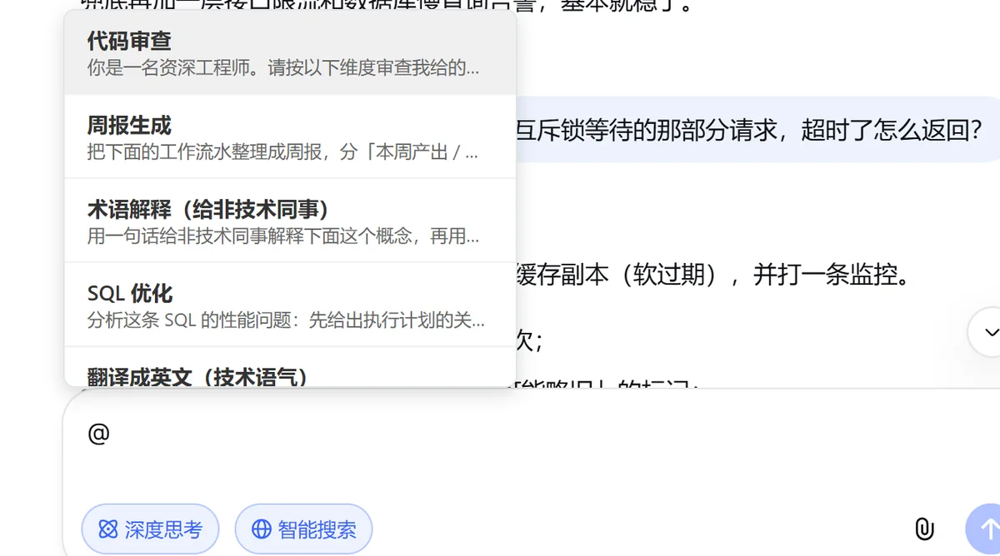
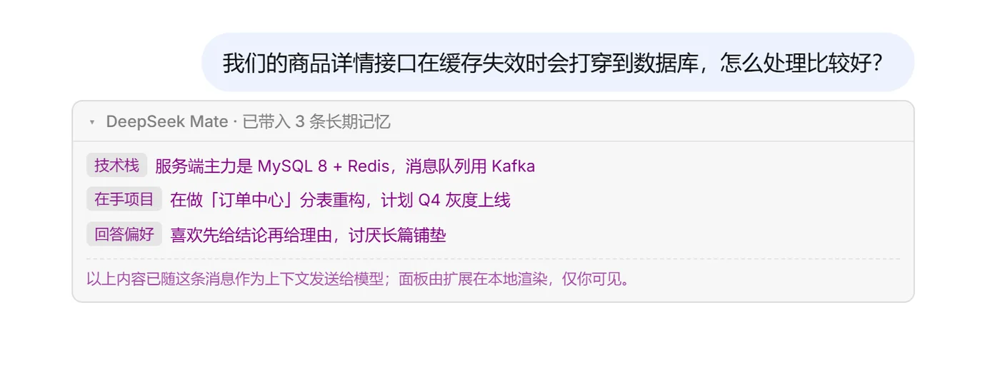
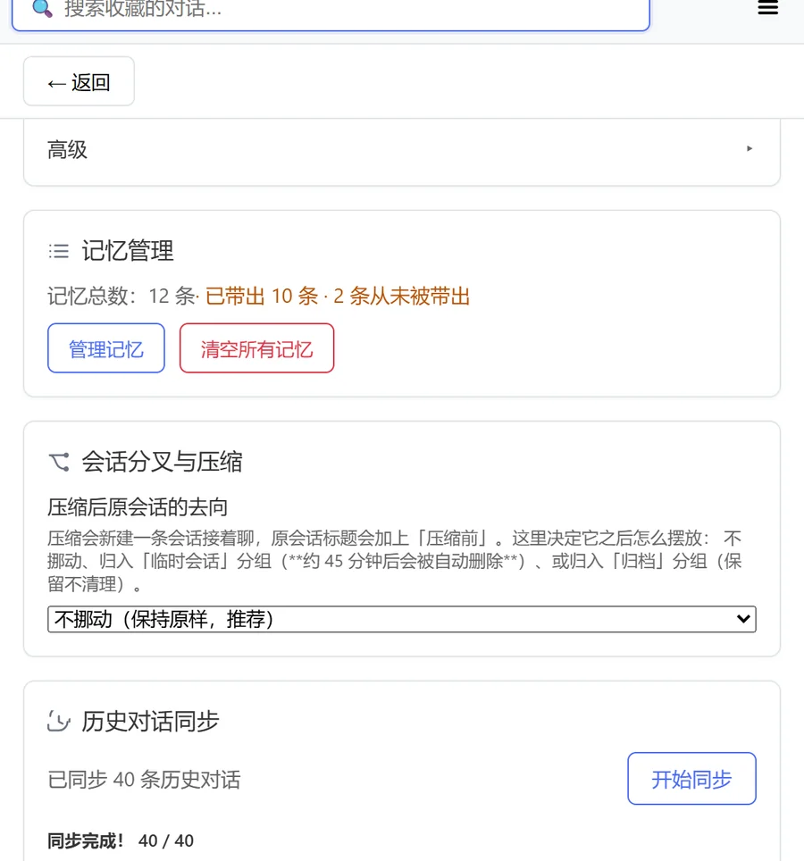

-
1
打开侧边栏
装好后点浏览器工具栏上的图标，侧边栏就会打开。右上角
☰是全部页面： 收藏列表 / 查找历史对话 / 提示词管理 / 记忆 / 设置 / 关于。侧边栏的宽度可以拖：把鼠标挪到它与页面之间的分隔线上，左右拖就行。
-
2
打开历史搜索（首次会同步一次）
设置 → 功能选项 → 打开「启用历史对话搜索功能」，然后到
☰→「查找历史对话」开始同步。 同步过程中就能搜，不用等它跑完；同步只读你的对话，不会改动任何东西。
关键词命中会高亮，点一下跳回原对话 同步进度会写在设置页「历史对话同步」那一栏。本地索引上限 2000 条，原对话始终留在 DeepSeek。
-
3
收藏好答案
把鼠标移到任意一条回答上，动作栏里点 ⭐ 就收藏了这一条； 想收藏整段会话就在会话行
⋯→「收藏会话」。
收藏列表：可导出 Markdown / 跳回原对话 / 生成分享链接 点开任意一条可以看全文；导出会给你一个
.md文件，格式是干净的 Markdown。 -
4
配置常用提示词
☰→「提示词管理」里维护你的模板（自带 14 个常用模板，可以改也可以删）。 之后在 DeepSeek 输入框敲一个@，浮层弹出、上下键选择、回车插入。
输入 @唤起提示词，回车插入 -
5
打开长期记忆
设置 → 功能选项 →「记忆功能」，再按需打开「自动注入记忆」。之后新对话的第一条消息会带上相关记忆， 并在气泡下方显示一个可折叠面板 —— 点开就能看到这次到底带了哪几条。

面板里逐条列出这次带入的记忆，可以核对 记忆都在
☰→「记忆」里管理：可以搜索、修改、置顶、删除，页面顶部还会显示 「已带出 N 条 / 从未被带出」。从对话里提炼新的记忆用
⋯→「记忆提取」。默认走网页通道（等同你在页面里提问）； 推荐把它切到自己的 API，见下面。强烈建议：把记忆提取切到自己的 API路径：设置 →「自定义 LLM API」→ 勾选「启用自定义 API」→ 填三项 → 点「保存 API 配置」。
- DeepSeek 官方：Base URL
https://api.deepseek.com、模型deepseek-chat， API Key 在platform.deepseek.com创建（按量计费，很便宜） - 切换之后：不走网页，也就不进 DeepSeek 官方风控，不产生临时会话，提取更稳定
- Base URL / API Key / 模型三项填全才生效；填不全会自动回落到网页通道
- 生效范围：记忆提取和会话压缩的摘要。 分叉 / 压缩最后那步仍要写你的账号（建会话、发消息），那部分无法用 API 替代
关于风控：网页通道的提取属于"自动替你发了一条消息"。所以我们默认关闭自动提取； 打开前会提示风险。要长期无人值守，建议配 API。
- DeepSeek 官方：Base URL
-
6
分叉 / 压缩一段长对话
想从某一条回答那里另起一条线：鼠标移到那条回答 → 点「从这里继续」。 新会话会带着到那一轮为止的上下文继续，原会话不动。
会话里传过文件的话，附件也会一起带过去。分叉只带上分支点之前用到的那些文件， 分支点之后才上传的不跟过去；压缩带上整段会话用到的文件。新会话的第一条消息会直接引用这些附件， 不用重新上传。
想整体换个干净会话继续：会话行
⋯→「会话压缩」， 它会先让模型写一份交接摘要（那一问一答会自动隐藏），再新建会话带上摘要 + 最近几轮原话。
所有入口都收在 ⋯ 菜单的 DEEPSEEK MATE 分组里，悬停有说明 压缩完成后，原会话标题会加上「【压缩前】」，去向可以在设置里选： 不挪动 / 进「临时会话」分组（约 45 分钟后自动清理）/ 进「归档」分组（保留）。
小提示：为了不让你的 DeepSeek 账号被风控，分叉 / 压缩 / 记忆提取之间 有 45 秒基础间隔；连续做到第 5 次起拉长到 90 秒， 同一个对话 60 秒内不能重复操作。被拦下时提示会告诉你还要等几秒 —— 等一下就好，别连点。 如果这次在"读会话"阶段就失败（没真正发出请求），等待时间会退还，不用白等。
-
7
管理和清理你的数据
设置页最下面是「数据导出与清理」：能看到本机占用、导出备份、清空收藏或历史索引。 所有数据都在你的浏览器里，删掉就是真的删掉。

设置页：功能开关 / 记忆 / 分叉去向 / 同步 / 数据清理 换 DeepSeek 账号时：本地数据是跟浏览器走的，不跟账号走。换号后建议先清空历史索引 和收藏，否则搜索里会混进上一个账号的对话（点进去会 404）。